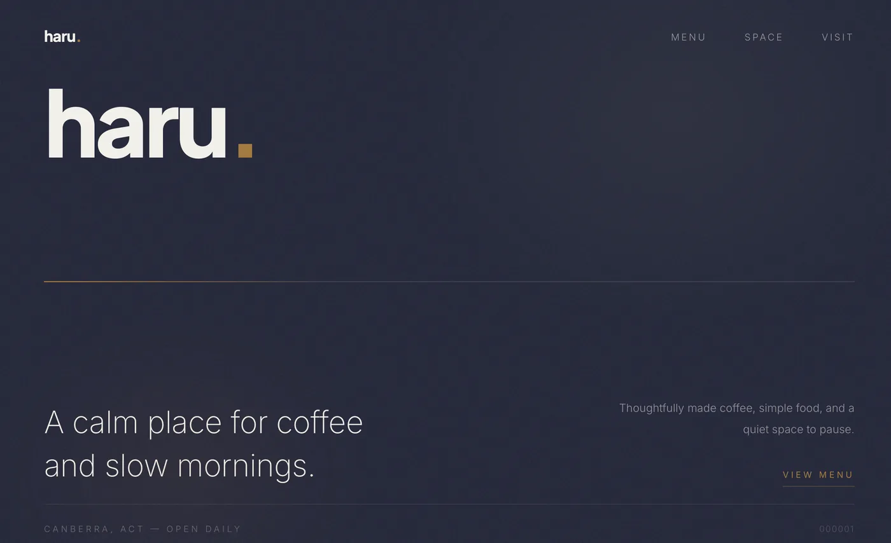
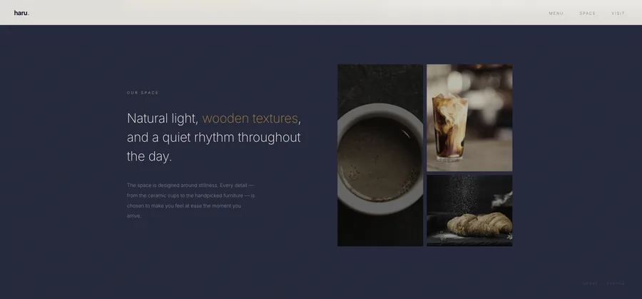
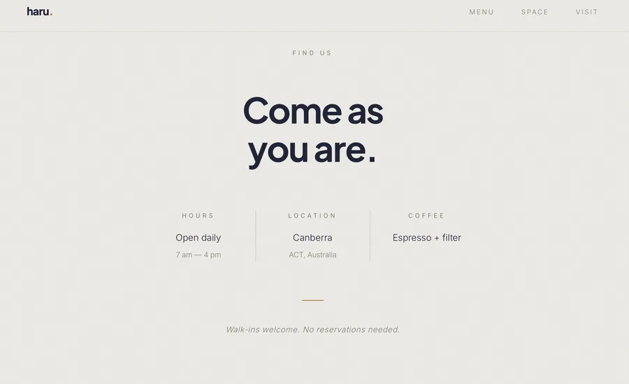

Haru Cafe
A minimal website for a modern cafe brand.
Cafe website design concept
Haru Cafe explores a minimal website direction for a contemporary cafe brand. The homepage uses editorial spacing and a clear content hierarchy to introduce the brand without crowding the page. The focus is on visual direction, page structure and a calm browsing experience.
The design work covers the homepage, supporting content layouts and mobile optimisation. Typography and spacing connect the different sections so the visual identity feels consistent as visitors move through the site.
Explore web design services and packages or browse more design projects.
Visuals



What I worked on
- Website design
- Layout structure
- Visual direction
- Mobile optimisation
Note
Designed with a focus on simplicity, spacing, and a calm visual flow.